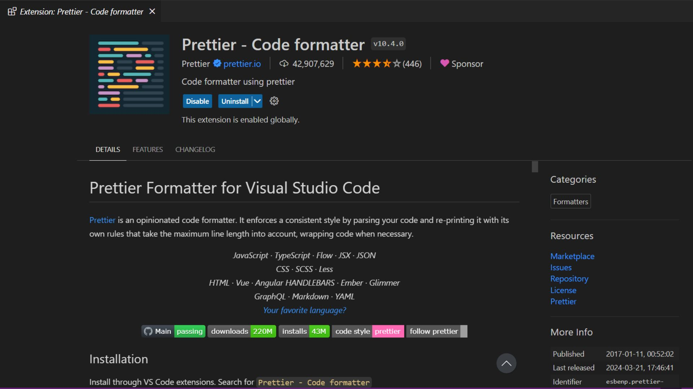
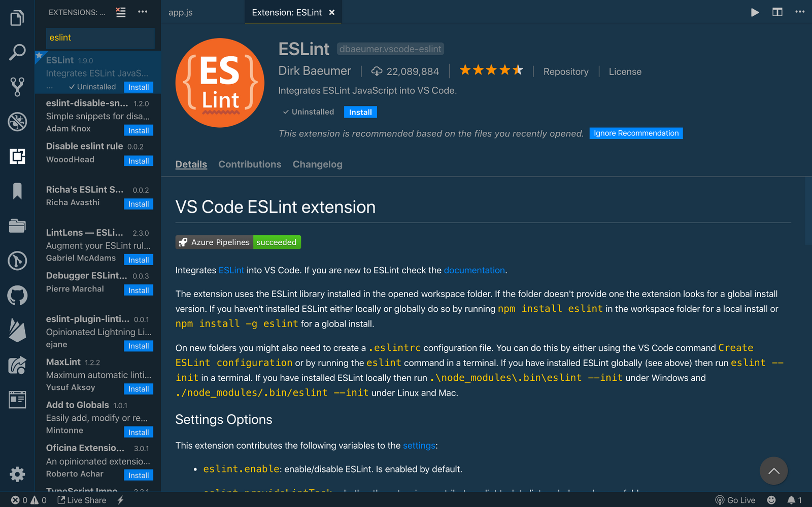
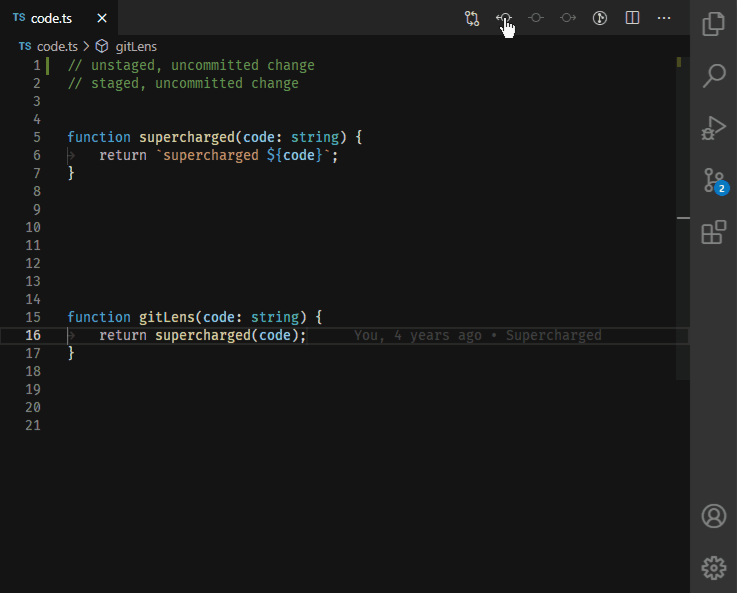
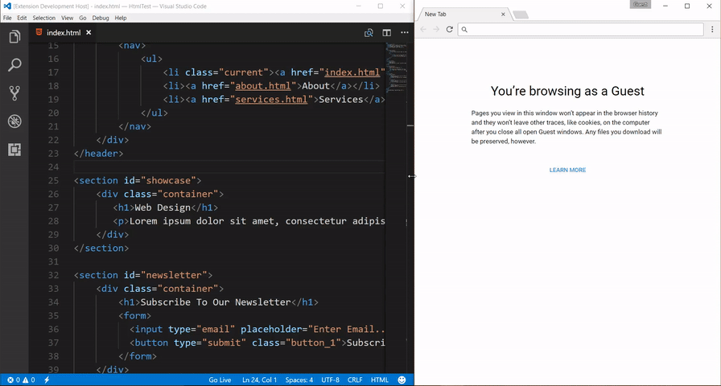
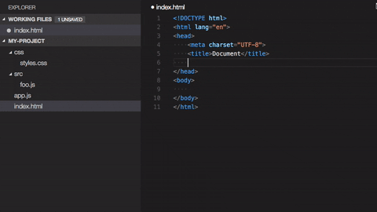
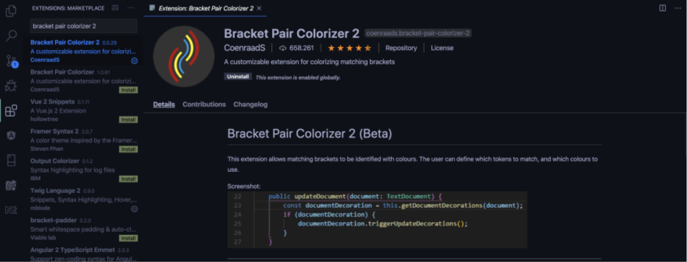
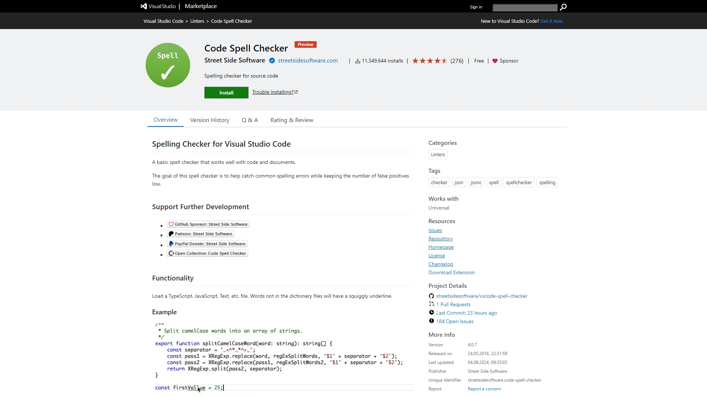
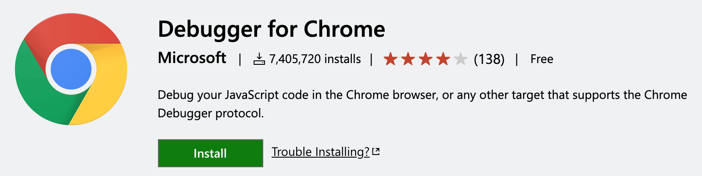
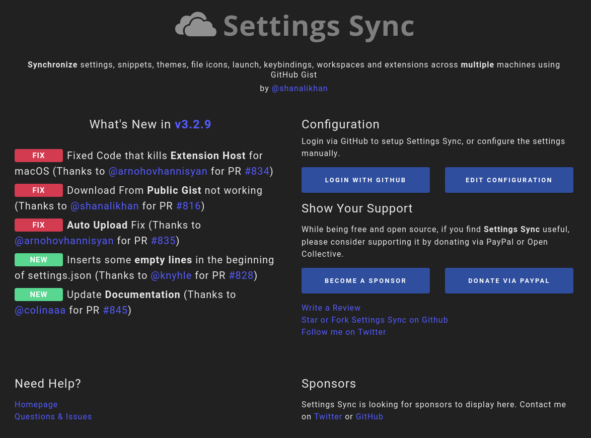
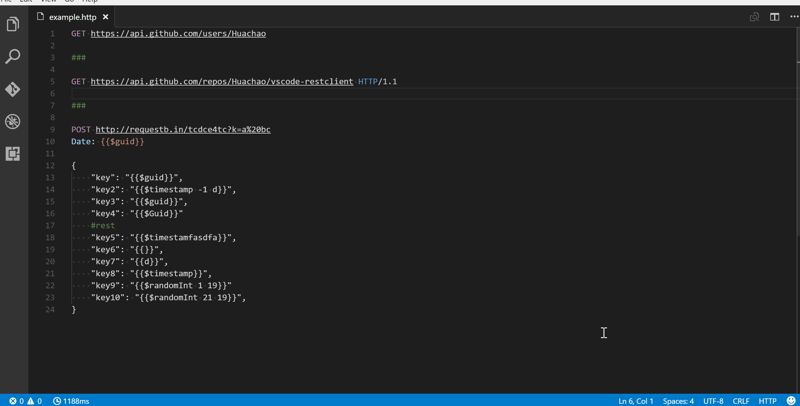

Топ‑10 плагинов для Visual Studio Code
Visual Studio Code (VS Code) — один из самых популярных редакторов кода в мире. Его сила не только в базовой функциональности, но и в огромной экосистеме расширений: они добавляют автодополнение, подсветку синтаксиса, инструменты для рефакторинга, интеграцию с Git и многое другое. Ниже — подборка из 10 полезных плагинов, которые пригодятся как начинающим, так и опытным разработчикам
1. Prettier — Code formatter

Для чего нужен: автоматическое форматирование кода по единым стандартам.
Почему в топе: избавляет от споров в команде о стиле оформления и экономит время на ручное выравнивание кода.
Что поддерживает: JavaScript, TypeScript, CSS, HTML, Vue, Angular и другие языки (через плагины).
Как использовать: после установки достаточно нажать Shift + Alt + F (Windows/Linux) или Shift + Option + F (macOS), либо включить автоформатирование при сохранении файла.
Скачать2. ESLint

Для чего нужен: поиск ошибок и нарушений стиля в JavaScript/TypeScript‑коде.
Почему в топе: помогает писать чистый и безопасный код, сразу подсвечивая потенциальные проблемы.
Что делает: проверяет синтаксис, стилистические правила, возможные баги и антипаттерны.
Интеграция: отлично работает вместе с Prettier: ESLint отвечает за «правильность», а Prettier — за «внешний вид» кода.
Скачать3. GitLens

Для чего нужен: расширенная работа с Git прямо внутри VS Code.
Почему в топе: позволяет видеть, кто и когда изменил каждую строку кода, просматривать историю коммитов, сравнивать ветки и быстро переходить к нужным изменениям.
Полезные функции: аннотации строк (blame), визуализация истории, быстрые действия с коммитами и пул‑реквестами.
Скачать4. Live Server

Для чего нужен: запуск локального веб‑сервера для быстрой разработки фронтенда.
Почему в топе: незаменим для HTML/CSS/JS‑разработки: при сохранении файла страница автоматически перезагружается в браузере.
Как использовать: правой кнопкой мыши по HTML‑файлу → «Open with Live Server».
Скачать5. Path Intellisense

Для чего нужен: автодополнение путей к файлам и папкам.
Почему в топе: экономит время при импорте модулей и подключении ресурсов, снижает риск опечаток в путях.
Где полезен: в проектах на JavaScript, TypeScript, HTML и других языках, где часто используются относительные пути.
Скачать6. Bracket Pair Colorizer (или его современная версия — Bracket Pair Colorizer 2 / встроенная функция в новых версиях VS Code)

Для чего нужен: визуальное выделение пар скобок разными цветами.
Почему в топе: упрощает чтение вложенного кода (особенно в JS, TS, JSON, XML) и помогает быстрее находить несбалансированные скобки.
Нюанс: в последних версиях VS Code часть функционала уже встроена, но расширения могут давать дополнительные настройки.
Скачать7. Code Spell Checker

Для чего нужен: проверка орфографии в коде и комментариях.
Почему в топе: находит опечатки в названиях переменных, комментариях и строках, что особенно важно в командной разработке.
Гибкость: можно настроить словари, игнорировать определённые файлы и типы токенов.
Скачать8. Debugger for Chrome (или встроенные средства отладки в VS Code)

Для чего нужен: отладка JavaScript/TypeScript кода прямо в редакторе с интеграцией в Chrome.
Почему в топе: позволяет ставить точки останова, просматривать значения переменных и пошагово выполнять код без переключения между инструментами.
Альтернатива: в современных версиях VS Code многие сценарии отладки работают «из коробки» с помощью конфигураций launch.json.
Скачать9. Settings Sync

Для чего нужен: синхронизация настроек, расширений и привязок клавиш между разными компьютерами.
Почему в топе: если вы работаете на нескольких устройствах, этот плагин экономит часы на повторную настройку среды.
Как работает: использует GitHub Gist для хранения конфигурации; достаточно войти в GitHub и включить синхронизацию.
Скачать10. REST Client

Для чего нужен: отправка HTTP‑запросов прямо из VS Code и просмотр ответов.
Почему в топе: удобно тестировать API без сторонних клиентов вроде Postman. Запросы хранятся в файлах .http, их можно версионировать вместе с кодом.
Как выбрать нужные плагины
Не стоит устанавливать сразу все расширения: это может замедлить VS Code и усложнить интерфейс. Лучше исходить из стека технологий и задач:
- Веб‑разработка: Prettier, ESLint, Live Server, Path Intellisense, REST Client.
- Работа с Git и командной разработкой: GitLens, Settings Sync, Code Spell Checker.
- JavaScript/TypeScript проекты: ESLint, Prettier, Bracket Pair Colorizer, Debugger.